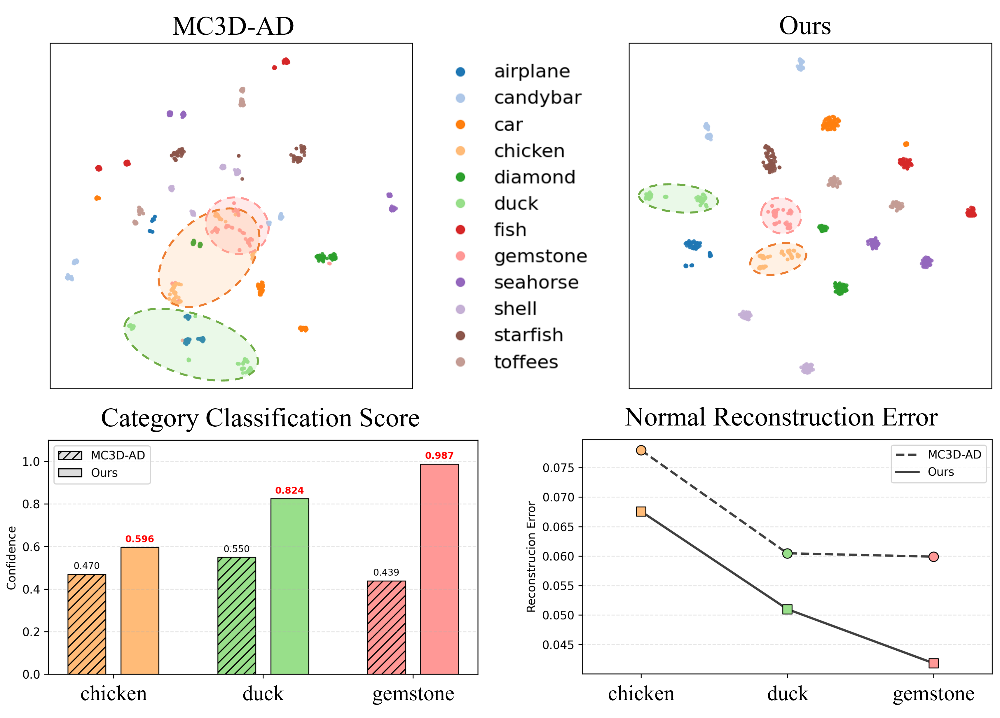
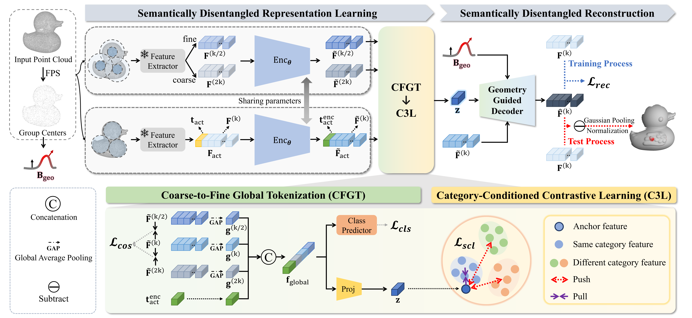
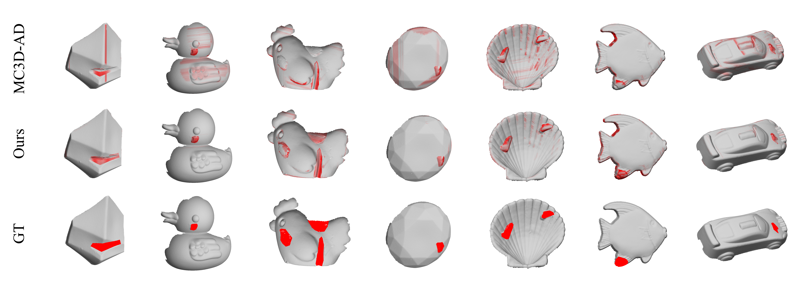

- We identify Inter-Category Entanglement (ICE) as a fundamental bottleneck of unified 3D anomaly detection and reformulate unified 3D-AD as semantically conditioned reconstruction.
- We propose Coarse-to-Fine Global Tokenization (CFGT), which aggregates multi-resolution geometric cues into a category-aware global representation for reliable semantic identity formation.
- We introduce Category-Conditioned Contrastive Learning (C3L) and a Geometry-Guided Decoder (GGD) to disentangle category semantics and reconstruct features with both semantic and geometric consistency.
- Extensive experiments on Real3D-AD and Anomaly-ShapeNet demonstrate strong gains over prior methods and validate the effectiveness of semantically disentangled reconstruction in unified 3D anomaly detection.
Why Unified 3D-AD Fails: Inter-Category Entanglement
We analyze the latent space of a unified baseline and observe that semantically different categories form heavily overlapping feature clusters rather than distinct semantic manifolds. In particular, categories such as chicken, duck, and gemstone exhibit clear entanglement in the latent space. Furthermore, normal samples with lower category classification scores tend to show higher reconstruction errors, indicating that incorrect semantic understanding leads directly to incorrect reconstruction. These observations confirm that ICE is not a random side effect, but a systematic bottleneck in unified 3D anomaly detection.

T-SNE visualization and quantitative analysis of semantic disentanglement. Compared with MC3D-AD, SeDiR forms better-separated category-aware manifolds, improves category classification confidence, and reduces normal reconstruction error.
Proposed Method
SeDiR follows a simple principle: understand what to reconstruct before deciding how to reconstruct. Given an input point cloud, SeDiR first extracts multi-resolution geometric features and aggregates them into a category-aware global token. It then disentangles category semantics in the latent space and reconstructs features using both semantic priors and geometry-guided cues. This design enables semantically aligned and geometrically consistent reconstruction in the unified multi-category setting.

Overall architecture of SeDiR. Our framework consists of two stages: Semantically Disentangled Representation Learning and Semantically Disentangled Reconstruction. CFGT forms a category-aware global token from multi-resolution geometric features, C3L disentangles latent semantics, and GGD reconstructs the object conditioned on both semantic and geometric priors.
GGD: Geometry-Guided Decoder

The Geometry-Guided Decoder reconstructs features using both disentangled semantic priors and local geometric evidence. Instead of decoding blindly from latent features, the decoder is softly biased toward category-consistent reconstruction pathways. This helps ensure that geometry is reconstructed according to the correct semantic identity, leading to more stable anomaly scores and more precise localization.
Qualitative Results
SeDiR produces more semantically consistent and spatially precise anomaly localization across diverse categories. Compared with a previous unified model (MC3D-AD), it better highlights true anomalous regions while reducing false responses on normal surfaces. These qualitative results support the claim that disentangling semantic identity before reconstruction leads to more reliable anomaly detection and localization.

Qualitative comparison between MC3D-AD and SeDiR. SeDiR provides more accurate and complete localization by reconstructing features under the correct semantic prior.
Citation
@article{kim2026semantically,
title={A Semantically Disentangled Unified Model for Multi-category 3D Anomaly Detection},
author={Kim, SuYeon and Lee, Wongyu and Cho, MyeongAh},
journal={arXiv preprint arXiv:2603.25159},
year={2026}
}